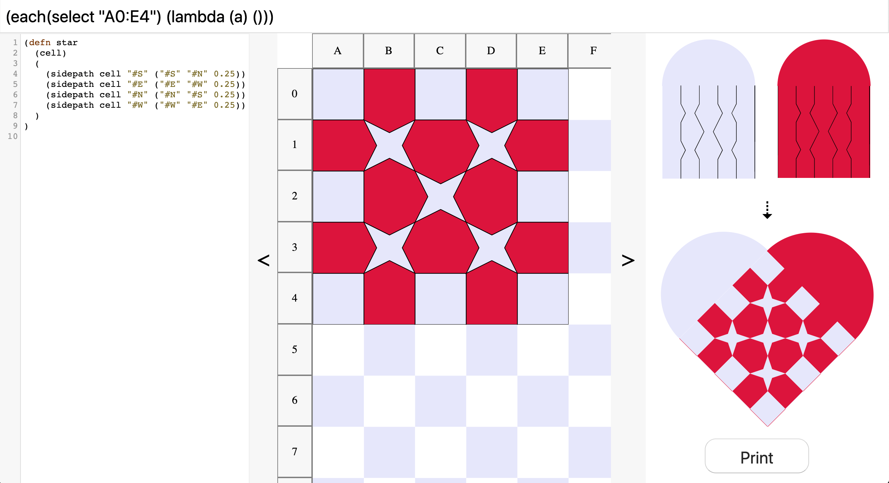

A collection of speculative creative/expressive tools and media
VisiWeave - A tool for creating paper weaving patterns.
A domain-specific language is used to generate grids and spreadsheet style commands are used to shape the cells in the grid. The core philosophy behind this project is that a good end-user programming experience is achieved through a tight coupling and co-presence of both code and data in the interface - the code is the interface is the code.

Git for Filmmakers - A version control tool for filmmakers.
The lack of good quality version control has wrecked many a film-project. This project seeks to provide a simple and powerful interface for filmmakers to visualise how their project files changed of time, do collaborative editing, and better document their projects.

Midi Plotter - A realtime midi visualisation tool.
A drawing tool for visualising midi-feeds during performances. When you perform with the pen plotter it almost becomes a second performer as the rhytmns and sounds the plotter makes as it draws merges with the notes you play on your instrument.

entries leading here ・ research
linked entries ⤳
This project is a braiding of two lines of research
- an exploration of what it means to experience computing as being embedded in a communal, cultural, and spatial fabric.
- the development of a design medium and environment for paper weaving
What does it me mean for computing to be embedded in a communal, cultural, and spatial fabric?
slides・from a presentation on this project at Convivial Computing Salon
At my home the process of weaving a heart is a social and spatial affair. A process where the paper weaving designs I make interact spatially with the ones woven by my great grandfather.
VisiWeave resulted from a process situated in a cultural, communal, and historical context. It is part of a deep network of culture and history.
In his book Tools for Conviviality (1973) Ivan Illich (1926 - 2002) talked of conviviality as a communal practice existing in space “I choose the term 'conviviality' to designate the ... autonomous and creative intercourse among persons, and of persons with their environment.”
I feel that the conviviality of VisiWeave is directly tied to my ability to articulate the space and community the tool is embedded in and grew out of.
The design of VisiWeave grew out of a living cultural practice. Conviviality is embedded in process - it is local and situated - and, for me, represents one path forward where computational tools are created with a consciousness of the historical and cultural environment.
A design medium and environment for paper weaving
Weaving is a binary art - Heinz Zemanek
visiweave.com・a prototype environment github・repo for the environment
The design of this medium flows from the notion that embracing computational media can enrich the practice of paper weaving.
It is inspired in spirit and practice by work within the fields computational weaving, computational origami, and paper mechatronics.
There are many challenges associcated with paper weaving design. A significant barrier is how one is often forced to work with several representations at the same time. For example, one often has to work with the componenent pieces of a weaving design while thinking about what the final interlacement of the pieces will look like.
VisiWeave adresses this challenge by making it possible to work directly with the final, woven, representation of the design.
Many creative professions have no high quality version control systems. Film-making is one profession in which the majority of practitioners use only very limited systems for version control. The lack of version control makes collaboration hard as there are many barriers to share, explore, and merge projects.
This project seeks to provide a simple and powerful interface for filmmakers to visualise how their project files changed of time, do collaborative editing, and better document their projects.
Midi Plotter
A Rust program which makes it possible to visualise midi notes with the HP7440A pen plotter as they are received. This project grew out of my fascination with printing technologies and a desire to explore whether printing can be seen as a time-based media. I wrote a reflection on what it means for printing to be a time-based elsewhere on this site.
Once finished I had a few different people try out the program. One friend started playing Partita by Bach: above is the pen plotter visualisation of her performance alongside the traditional representation of the piece.
When you perform with the pen plotter it almost becomes a second performer as the rhytmns and sounds the plotter makes as it draws merges with the notes you play on your instrument: